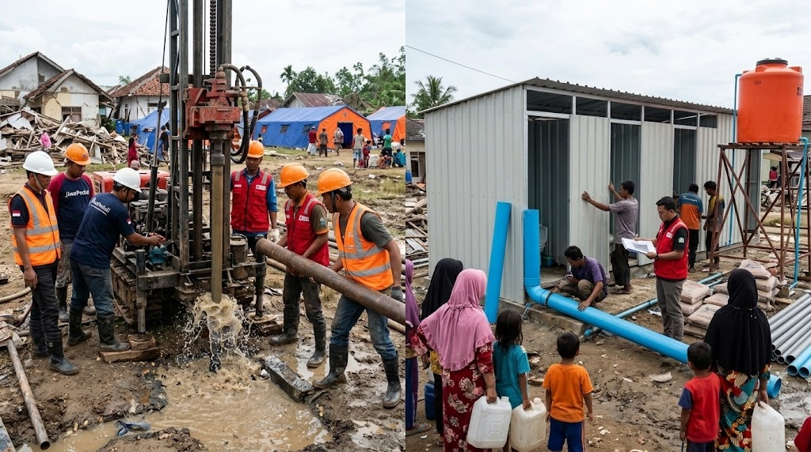

Pilih Posko Bantuan Bencana
Salurkan donasi Anda langsung ke daerah musibah yang paling membutuhkan perhatian darurat
 Bandar Lampung
Bandar Lampung
Banjir Bandang & Longsor Pemukiman Bandar Lampung
Luapan sungai merendam rumah warga di beberapa kecamatan. Posko JiwaPeduli Lampung mendirikan dapur umum 24 jam dan distribusi air bersih.
- Air Bersih & Makanan Cepat Saji
- Perahu Karet Evakuasi & Pompa Air
- Susu Bayi & Selimut Pengungsi
 Pasaman & Padang, Sumbar
Pasaman & Padang, Sumbar
Hunian Darurat & Posko Medis Gempa Sumatera
Gempa susulan merusak fasilitas warga. Tim medis JiwaPeduli standby di tenda lapangan untuk perawatan luka dan penanganan lansia.
- Terpal & Tenda Keluarga Pengungsi
- Obat-obatan & Tenaga Medis Lapangan
- Genset Penerangan Posko
 Sukabumi, Jawa Barat
Sukabumi, Jawa Barat
Akses Logistik Jembatan Darurat & Sembako Sukabumi
Longsor menimbun jalan penghubung antar desa. Relawan menggunakan kendaraan roda dua khusus untuk mengantar ransum beras dan minyak ke warga.
- Paket Sembako Keluarga (Beras, Minyak)
- Peralatan Sekop & Pembersih Lumpur
- Sepatu Boot & Jas Hujan Relawan
 Flores Timur, NTT
Flores Timur, NTT
Masker Medis & Evakuasi Erupsi Gunung Api NTT
Hujan abu vulkanik pekat mengancam pernafasan anak-anak di radius 7 km. Relawan membagikan masker respirator dan tabung oksigen darurat.
- Masker N95 & Kacamata Pelindung
- Tetes Mata Steril & Salep Kulit
- Air Galon Mineral Steril

Sigi, Sulawesi TengahPembangunan Sumur Bor & Sanitasi Bersih Pasca Bencana
Pembangunan kembali sarana MCK darurat dan instalasi pipa air bersih agar masyarakat terhindar dari wabah penyakit kulit.
- Pipa Paralon & Tandon Air 1.000L
- Bahan Bangunan Semen & Bata
- Perlengkapan Mandi & Sabun Higienis